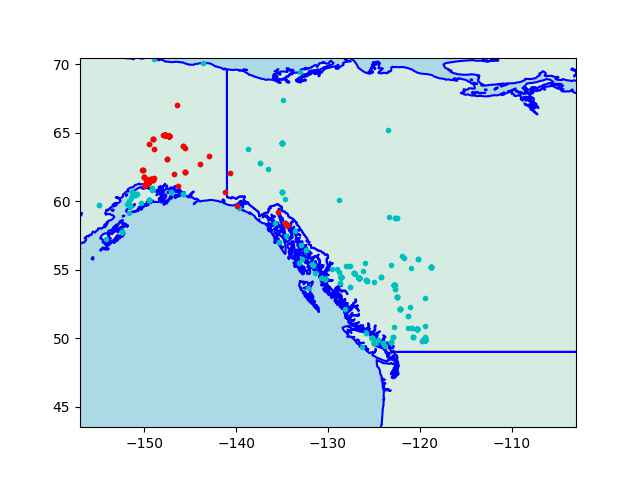
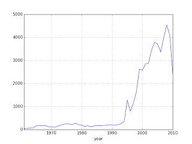

UFOs
Do UFOs exist? In one case data did not allow easy refutation of a UFO hypothesis. In most other cases, nothing jumps out that will trigger a 'aha!'.
NUFORC Dataset
This dataset [3] contains over 80,000 reports of UFO sightings over the last century. Original data from [1]. The scrubbed version is below,
Code filters out sightings before 2010, then downsamples to reduce the plotted points.
US Per State Analysis, Ratio Comparison
In this analysis, per state sightings ratio was compared to state's population ratio (to US total). A lot of people report a lot of sightings, but do some states report more sightings disproportionate to their population, indicating something mysterious..? Proportion ratio z-test was used to determine significance. For significant states, then calculated per-state sightings midpoint. Also plotted are known US nuclear missile bases (red circles).
The Alaska Triangle
AT is claimed to be a spot where a lot of "abductions" happen. The "triangle" corners are Utqiagvik, Anchorage, and Juneau.
u.get_sm().plot_countries(57, -130,zoom=3.0)
dfa = df[df['box'] == 1]; plt.plot(dfa['longitude'],dfa['latitude'],'c.')
dfa = df[df['alaska'] == 1]; plt.plot(dfa['longitude'],dfa['latitude'],'r.')

from pygeodesy.sphericalNvector import LatLon
import pandas as pd
alaska = LatLon(71.3523639355, -156.8902618143), # Utqiagvik \
LatLon(61.2156587607, -149.9961202934), # Anchorage \
LatLon(58.2841500903, -134.3658221788) # Juneau
box = LatLon(40.920145037, -157.44286897), LatLon(49.681668976, -119.43107343), LatLon(74.504662641, -112.24847310), LatLon(63.043026402, 173.142850255)
df = pd.read_csv('/opt/Downloads/ufo/scrubbed.csv')
df['alaska'] = df.apply(lambda x: LatLon(float(x['latitude']),float(x['longitude'])).isenclosedBy(alaska), axis=1).astype(int)
df['box'] = df.apply(lambda x: LatLon(float(x['latitude']),float(x['longitude'])).isenclosedBy(box), axis=1).astype(int)
df = df[df.box == 1]
Do these look like have a seperate pattern? The lower left corner of the triangle is part of the sighting density in that small region, same is true for lower right. If there is a "triangle" why not a "rectangle" around 50,-135?
Sightings Data
One good dataset [2] on UFO reportings, some code for a plot,
import pandas as pd, zipfile
with zipfile.ZipFile('ufo.csv.zip', 'r') as z:
d = pd.read_csv(z.open('ufo.csv'),sep=',',parse_dates=['DateOccurred'])
d = d.sort_index(by=['DateOccurred'])
d = d[pd.isnull(d['DateOccurred']) == False]
dates = d.DateOccurred.astype(str)
dates = dates[dates!='nan']
d['year'] = dates.apply(lambda x: datetime.strptime(x, '%Y-%m-%d').year)
g = d.groupby('year').size()
g[g.index>1960].plot()
The plot is for yearly count of UFO reports,

The dataset has UFO reports that go back to 1400s, with long descriptions of what people said when they reported the event. One sighting was recorded by a Confederate soldier during the Civil War. He thought it was a Union balloon but the thing he reported was moving too fast for a balloon. He must have thought "those damn Yankies and their tech!". I read all that with a general skepticism; One hypothesis I had was "UFO sightings increase with scifi becoming more accessible through media, people project their scifi fantasies onto the real world". Then the graph should've shown huge increase after the 60s/70s, it did not. There is a huge increase, but it is after 1992. What happened that year? Bill Clinton is elected as President. I don't know. Did the aliens start finding Earth more interesting because of Bill Clinton? Weird.
There is a drop at 2008 - well, Barack Obama is elected as President. Aliens lose interest after this time? ;) I urge readers the test their own hypothesis'. Some more: Let's say UFO delusion effects a certain percent of the population, then with more people we'd have more sightings. Then why is there a fall after 2008? Or why isn't there an exponential rise (in parallel to population growth which is exponential) much earlier than 1992? Or, if UFO sightings are actually sightings of Air Force weirdo toys mistaken for UFOs, then why is there a fall during Reagan years? He would've loved to fund that kind of tech.
UFO Sightings Around Nuclear Sites
Is UFO activity near nuclear sites higher than other areas? We could compare sighting counts within 100 km radius of those sites vs the res.. We will create a GLM via Poisson distribution on annual basis. The ratio will be calculated statistically, we get a distribution for the ratio and can check if it is centered around 1.
import ufo
params = ufo.ufo_sighting_nuke_counts()
ufo.poisson_ratio(*params)
mean sd hdi_3% hdi_97% ... mcse_sd ess_bulk ess_tail r_hat
alpha 1.372 0.281 0.831 1.888 ... 0.009 289.673 555.530 1.007
beta 0.002 0.025 -0.047 0.048 ... 0.000 9656.990 6170.410 1.000
sigma_year 2.439 0.223 2.011 2.847 ... 0.004 682.257 1111.974 1.006
rate_ratio 1.002 0.025 0.955 1.049 ... 0.000 9656.990 6170.410 1.000
[4 rows x 9 columns]
P(rate_ratio > 1) = 0.528
Median rate ratio: 1.0016459667262196
Mean rate ratio: 1.002105970452778
95% HDI: [0.9521081 1.05035831]
P(rate_ratio > 1): 0.528
P(0.9 <= rr <= 1.1): 0.999875
It is centered around 1.. The non-nuke sighting counts are indistinquishable from the nuke site sightings..
References
[1] NUFORC
[2] UFO
[3] NUFORC